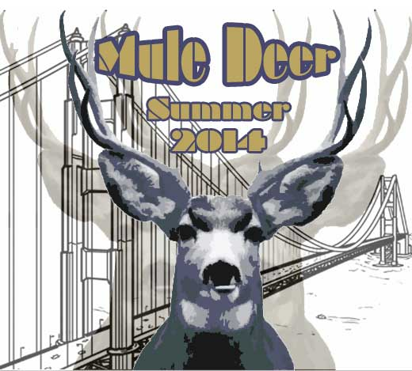

Cultural Blog!
Rites of Passage
Week 1 Reflections

- What's your take on the DBC experience?
I am really digging the holistic approach DBC takes to learning. Confronting and questioning our own deeply ingrained cultural training dictating that the learning process must be linear and rigid is super scary, but ultimately there's the potential to reprogram (ha.) ourselves.
- What is your impression of DBC?
So far, so good. Prep workload is a tad heavier than expected, but I found this to be kind of a pleasant surprise as distractions have melted away. I'm really looking forward to getting out of solitary mode and collaborating with my fellow boots.
- How do you see yourself engaging with this type of culture?
After multiple semi-failed attempts to learn on my own, I'm ready for total immersion. I think the hardest part for me will be to let go of those nagging feelings of self-doubt, and my tendency to say 'I get it!' without having the faintest clue what 'it' is. Being in an environment where questions are not only welcome, but required will be really refreshing.
- Have your expectations of DBC changed? If so, how?
I chose DBC because it was open about being an ever-evolving experimental environment, so there were no surprises there. The only real change I've experienced is just how real this is all becomming. There's been so much daydreaming and fretting about whether I'd fit in, get left behind, get discouraged, but now that prep has actually started and the wheels have hit the road, there just isn't enough time for hand-wringing.
- Are you excited to participate in this kind of learning environment?
Yes. Yes I am very excited. I even made a little Mule Deer graphic thingy. THAT'S how excited I am.
- Does it make you nervous?
Sure, but more good nervous than bad nervous, like flutters of stage-fright. It's a big life changing experience, but one that is ultimately positive because it is my choice to be here, and the amount of effort I put in is something I have control over.